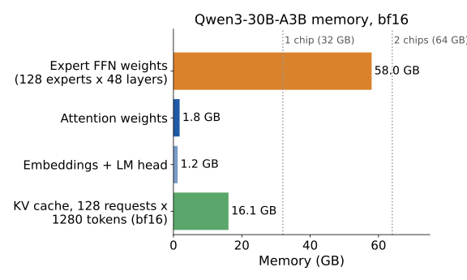
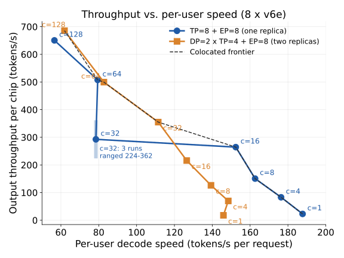

The problem
Each layer of a Mixture-of-Experts (MoE) model has attention, which reads every earlier token through a KV cache, and expert FFNs, where a router sends each token to a few of many experts.
They want different hardware: attention is limited by KV-cache memory traffic and grows with context; experts are efficient only when many tokens reach each expert at once. Serving both on the same chips ("colocated") ties their memory and parallelism together.
AFD puts attention and experts on separate chips, so each side can be sized on its own and the expert chips can batch tokens from many requests. The price: activations cross between the chip groups twice in every layer.
Questions
- Can AFD be built on TPUs with today's PyTorch serving stack, and how?
- For the same model, workload and 8 chips, when does tuned AFD beat colocated serving on the throughput vs. per-user speed frontier?
- Which settings matter most: attention:expert split, micro-batch overlap, batching, placement?
Why 8 chips

Experts alone need 58 GB, nearly all of two 32 GB v6e chips, so 3+ chips once working memory is counted. A 4-chip host allows one workable AFD split (1 attention : 3 expert); 8 chips allow several, so both systems get the same 8 chips.
Setup
- Model: Qwen3-30B-A3B, bf16 (48 layers, 128 experts, 8 per token).
- Hardware: one TPU v6e host, 8 chips.
- Software: vLLM 0.32 + vllm-torchtpu (PyTorch on TPU via XLA).
- Benchmark:
vllm bench serve, random prompts, 1024 in / 256 out, 1–128 concurrent requests, 200 requests per point.
Building AFD on TPU: what works
AFD needs attention chips and expert chips to exchange activations inside every compiled model step. We tested every way the stack offers, 4 attention + 4 expert chips, checked against a float32 reference:
| Approach | Result on TPU v6e |
|---|---|
| A separate compiled program per role (PyTorch) | Fails. Hangs; with forced ordering it runs but returns scrambled data. |
One program with a runtime branch (torch.cond) | Fails. Not supported by the TPU compiler. |
| Send only real data (uneven all-to-all) | Fails. Requires equal block sizes on every chip. |
| Chip-to-chip sends outside the compiled step | Correct, but 1.2–1.4 ms per layer: ~90× too slow. |
| One shared program, role passed in as data | Correct, 15–90 µs per layer. |
| JAX program with a per-chip branch | Correct, and each chip skips the other role's work (stand-alone test). |
On PyTorch/XLA for TPU, every chip must run the same compiled program; a chip's role has to be runtime data, not code. vllm-torchtpu's developers hit the same wall: rank-specific values compiled into the program desync the chips' collectives.
The exchange is affordable

Moving one layer's activations to the expert chips and back costs 15–20 µs at up to 8 tokens per chip: about 15% of a whole colocated layer, rising to ~23% at 32–128 tokens. Communication alone does not rule AFD out on TPU.
Practical lessons
- Capacity, not quota, was the bottleneck. 0 of 335 TPU requests started in the course's three zones over 3 days ("stockout"); searching all 20 v6e zones found Spot capacity in Mumbai.
- The compile cache can serve stale programs. After moving from 16 to 32 experts per chip, vLLM reused a cached 16-expert executable and failed; each layout now gets its own cache.
- Hands-off runs: every VM serves, benchmarks, uploads and deletes itself, with a deadline timer as backstop.
Our AFD design (v1)
¼ heads
¼ heads
¼ heads
¼ heads
0–31
32–63
64–95
96–127
Built as a small vLLM plugin, no fork
- Expert placement: chip j of each replica loads experts 32j–32j+31.
- Role as data: on attention chips the "first local expert" is set to 128, so no token matches a local expert and they compute nothing in MoE layers.
- All requests carry
X-data-parallel-rank: 0, so only chips 0–3 serve them. - Dispatch/combine reuse vLLM's existing data-parallel collectives: the same ones colocated serving runs, so the plumbing is known-good.
AFD output is correct
- All 4 known-answer prompts pass (e.g. 17 × 23 = 391; counting to 30; a 3-sentence explanation).
- Greedy text matches colocated serving until a near-tie, where bf16 rounding in a different summation order flips the pick. The baseline's token is always AFD's runner-up at nearly equal probability:
| Prompt (diverging token) | AFD pick | Colocated pick |
|---|---|---|
| "In 1969, the Apollo 11 mission" (1st) | marked 0.239 | achieved 0.239 |
| "A mixture-of-experts model routes…" (11th) | in 0.442 | for 0.442 |
| "The three laws of thermodynamics are" (2nd) | foundation 0.233 | most 0.206 |
A missing or double-counted expert would push the baseline's token far down AFD's ranking instead.
First AFD vs. colocated numbers

Unoptimized AFD v1 is 19–44% below colocated serving (DP=2×TP=4 at the same load), and the gap grows with load. Why:
- Half the chips wait. In each layer the expert chips wait for attention and the attention chips wait for the experts; colocated keeps all 8 busy. AFD systems overlap micro-batches to fix this.
- Half the attention. All requests go through 4 chips (time to first token at 128 requests: 2.0 s vs 1.0 s).
- Wasted work in v1. Expert chips also process their own replica's padding batches.
| Concurrent requests | 1 | 16 | 128 |
|---|---|---|---|
| AFD v1: output tok/s | 116 | 1,254 | 3,016 |
| Colocated DP=2×TP=4 | 142 | 1,729 | 5,425 |
| AFD v1: per-user tok/s | 118 | 92 | 34 |
| Colocated DP=2×TP=4 | 146 | 127 | 61 |
Colocated: mean of 3 runs (within 5% of each other except at 64 requests); AFD: 1 run.
Plan to Dec 7
- Nov 9–15: remove v1's wasted work (padding tokens on expert chips, unused expert weights on attention chips); time breakdown per layer from our profile traces (CCL-Bench).
- Nov 16–29: micro-batch overlap ("ping-pong"): attention on one half-batch while experts run the other, the step that lets AFD use both chip groups at once.
- Nov 30–Dec 6: sweep attention:expert splits; GSM8K accuracy and fuller benchmark protocol; final frontier; CCL-Bench entry with traces and workload cards.
Code, traces, run logs: github.com/cx18121/afd-tpu-serving · ~47 v6e chip-hours used so far.